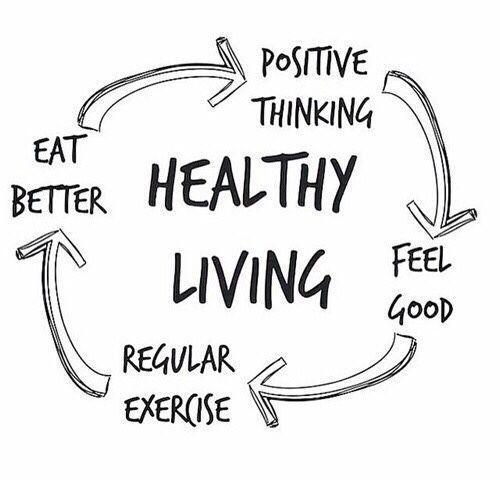

Who Am I?
September 25, 2025 by Simone Gardner

My name is Simone Gardner, a 19-year-old Computer Science major at the University of the West Indies. While I'm still a beginner, I enjoy going to the gym and exploring fitness. Another interest of mine is fashion, as styling my outfits is my favorite way to express my creativity. Lastly, I am a huge fan of anime, with my favorite anime being, of course, Naruto (the best anime of all time)! Its themes of perseverance, character development, and learning from failure have been a constant source of motivation and inspiration throughout my life!
Regarding my career, I am an aspiring Cybersecurity Analyst. As the world becomes increasingly connected, protecting data and vital systems becomes all the more important, and I would like to play a role in that protection.
Why is Naruto the Best of All Time?
September 25, 2025 by Simone Gardner
While this question often (somehow) leads to heated debate, it is undeniable that Naruto is the best anime of all time.
Perhaps, the aspect of the anime that stands out the most is its underdog protagonist, Naruto Uzumaki. Despite his lonely and difficult upbringing as an orphan ostracized by his society, Naruto never once loses sight of his goal of becoming a great shinobi and ultimately, the Hokage (Chief) of his village. His perseverance, grit and confidence amidst a world that told him he 'couldn't' is beyond inspirational, showing that determination and being your own cheerleader can overcome even the toughest obstacles.
Another aspect of the anime that stands out is Naruto's forgiveness. Despite the village's hatred and discrimination against him all his life, he still protected it with his life against the catastrophic threat, who was Pain (an antagonist). Whereas he could have justifiably left the village that had villainized him his entire life to perish, he instead chose to save it, flawlessly portraying the characteristics of benevolence and forgiveness.
While there are countless reasons as to why this anime is the greatest of all time, these few characteristics of its protagonist give insight into why it stands above all others.